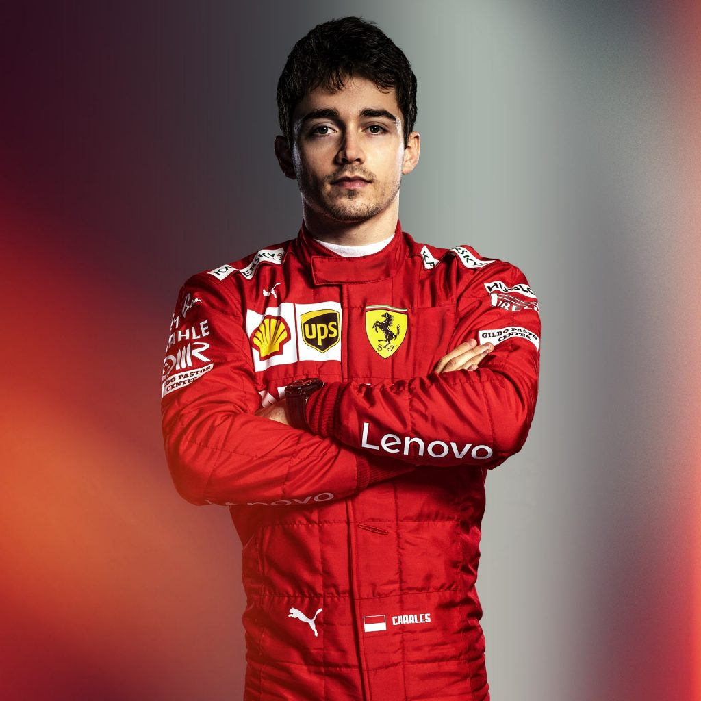

Шарль Леклер
Шарль Леклер - монегасский автогонщик, пилот Формулы-1. Выступает за команду "Феррари".
Дата рождения: 16/10/1997
Место рождения: Монте-Карло, Монако
Количество проведённых гонок: 22
Подиумы: -
Количество побед: -
Леклер начал свою карьеру в 2005 г. с картинга. В 2005, 2006 и 2008 годах он становился чемпионом французской серии PACA Championship, в 2009 г. выиграл French Cadet Championship С 2010 г. Шарль стал выступать в категории KF3, в этом году занял первое место в Junior Monaco Kart Cup. В 2011 г. выиграл CIK-FIA KF3 World Cup, CIK-FIA Karting Academy Trophy и ERDF Junior Kart Masters.
В 2012 г., при поддержке ART Grand Prix, стал участвовать в соревнованиях категории KF2. Занял первое место в WSK Euro Series, а также стал вице-чемпионом в CIK-FIA European KF2 Championship и CIK-FIA Under 18 World Karting Championship.
В сезоне 2013 года, последнем для Леклера в картинге, он стал вторым в CIK-FIA World KZ Championship и первым South Garda Winter Cup (KZ2).
В 2014 г. дебютировал в сериях с одноместными автомобилями, приняв участие в Еврокубке Формулы-Рено 2.0 и Альпийской Формуле-Рено 2.0 в составе команды Fortec. В первой серии он участвовал только в 6 гонках, в трёх из которых занял 2-е место, во второй провёл полный сезон, и со 199 набранными очками стал вице-чемпионом.
В 2015 г. провёл сезон в Чемпионате Европы Формулы-3, за 33 гонки он 13 раз побывал на подиуме (за 4 из которых — на первом месте). Всего Леклер набрал 363,5 очка, по итогам сезона занял 4-е место.
В 2016 г. дебютировал в серии GP3 в составе команды ART Grand Prix, а также получил место резервного пилота в двух командах Формулы-1 — «Феррари» и «Хаас».
Сезон 2017 г. провел в серии F2, за 22 гонки одержал 7 побед и за этап до конца сезона завоевал титул.
2 декабря 2017 г. было объявлено, что сезон 2018 г. Леклер проведет в F1, в составе команды Sauber.
29 апреля 2018 в Гран-при Азербайджана набрал первые в карьере очки за финиш на 6 месте. В дальнейшем финишировал в очковой зоне в Гран-при Испании, Канады, Франции, Австрии.
11 сентября 2018 года Скудерия Феррари объявила о том, что Шарль Леклер станет ее пилотом в сезоне 2019 года.